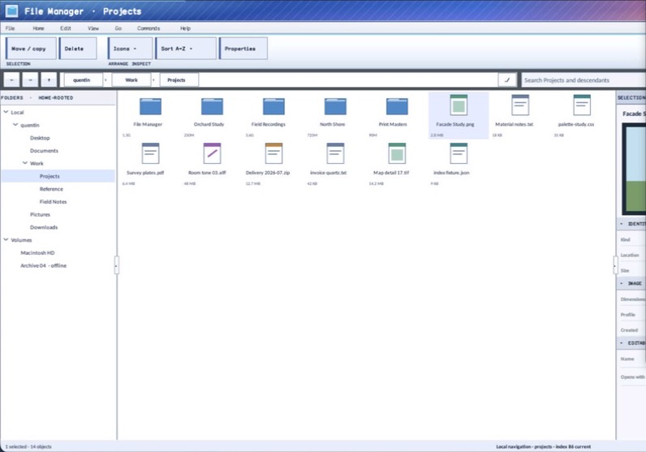

class · visual
ObjectView
ObjectView is a virtualized retained collection surface with icon-grid and details projections over one stable item model. Icon labels use no more than two centered Unicode 17 grapheme-safe lines and disclose a truncated complete name on hover or keyboard focus; details labels remain single-line and column-bounded. Selection owns a semantic fill plus boundary, while keyboard focus is an independent dotted non-color cue. It also owns single or multiple selection, range anchors, keyboard/pointer/context behavior, configurable cell geometry, optional secondary text, and virtual item semantics.
Visual evidence

Ownership and hierarchy
- Hierarchy
- Panel → ObjectView
- Declaration
- include/gui_forms/controls/panel/object_view/object_view.hpp:61
- Definition
- src/controls/panel/object_view/object_view.cpp
Declared methods
ObjectView public
explicit ObjectView(StableId stable_id)Constructs a focusable collection surface with stable multi-selection, item activation, and context routing.
items public
[[nodiscard]] std::span<const ObjectViewItem> items() const noexceptReturns the authored object records in presentation order.
set_items public
void set_items(std::vector<ObjectViewItem> items)Validates identities, replaces the item model, and reconciles selection, focus, anchor, and scroll state.
view_mode public
[[nodiscard]] ObjectViewMode view_mode() const noexceptReturns icon-grid or details-row presentation.
set_view_mode public
void set_view_mode(ObjectViewMode mode)Validates and commits presentation mode while preserving stable selection and focus.
selected_id public
[[nodiscard]] std::string_view selected_id() const noexceptReturns the primary selected identity, if any.
set_selected_id public
void set_selected_id(std::string_view stable_id)Replaces selection with the admitted identity and publishes a real transition.
selected_ids public
[[nodiscard]] std::span<const std::string> selected_ids() const noexceptReturns all selected stable identities in item order.
set_selected_ids public
void set_selected_ids(std::vector<std::string> stable_ids, std::string_view primary_id =Validates, normalizes, and commits caller-supplied selection under the current policy.
clear_selection public
void clear_selection()Clears authoritative selection while retaining a usable focus position.
select_all public
void select_all()Selects every admitted item when multiple selection is enabled.
selection_mode public
[[nodiscard]] ObjectSelectionMode selection_mode() const noexceptReturns the current single, multi-simple, or multi-extended policy.
set_selection_mode public
void set_selection_mode(ObjectSelectionMode mode)Commits selection policy and normalizes any incompatible retained selection.
selection_anchor_id public
[[nodiscard]] std::string_view selection_anchor_id() const noexceptReturns the stable anchor used for range extension.
focused_id public
[[nodiscard]] std::string_view focused_id() const noexceptReturns the keyboard-focused item identity independently of selection.
icon_cell_size public
[[nodiscard]] Size icon_cell_size() const noexceptReturns logical icon-grid cell geometry.
set_icon_cell_size public
void set_icon_cell_size(Size size)Validates bounded cell dimensions and refreshes layout, paint, and hit testing.
details_row_height public
[[nodiscard]] double details_row_height() const noexceptReturns logical height for details-mode rows.
set_details_row_height public
void set_details_row_height(double height)Validates bounded row height and refreshes details geometry.
show_secondary_text public
[[nodiscard]] bool show_secondary_text() const noexceptReports whether optional subtitle and metadata fields are painted.
set_show_secondary_text public
void set_show_secondary_text(bool show)Toggles secondary presentation while preserving the authoritative item model.
top_row public
[[nodiscard]] std::size_t top_row() const noexceptReturns the first row projected into the viewport.
set_top_row public
void set_top_row(std::size_t row)Clamps and commits the scroll-row origin for the active presentation.
font public
[[nodiscard]] FontSpec font() const noexceptReturns the retained item typography.
set_font public
void set_font(FontSpec font)Validates typography and invalidates collection measurement and paint.
image_list public
[[nodiscard]] std::shared_ptr<ImageList> image_list() const noexceptReturns the optional shared source used to resolve item image keys.
set_image_list public
void set_image_list(std::shared_ptr<ImageList> image_list)Rebinds imagery without changing object identities or selection.
selection_changed public
[[nodiscard]] Event<const ObjectSelectionChange&>& selection_changed() noexceptReturns the event published with normalized selected identities after a real commit.
item_activated public
[[nodiscard]] Event<const std::string&>& item_activated() noexceptReturns the event carrying the stable item activated by pointer, keyboard, or semantics.
context_requested public
[[nodiscard]] Event<const ObjectContextRequest&>& context_requested() noexceptReturns the event carrying item identity and logical position for context UI.
arrange public
void arrange(Rect final_bounds) overrideCommits viewport geometry, clamps scrolling, and ensures focused content remains reachable.
on_paint public
void on_paint(Painter& painter, Rect local_damage) overrideRecords only visible icon cells or detail rows with imagery, bounded text, explicit selection, independent dotted keyboard focus, and complete-name inspection for truncated items.
on_pointer public
void on_pointer(PointerEvent& event) overrideHandles item hit testing, modifier-aware selection, context requests, capture qualification, and activation.
on_key public
void on_key(KeyEvent& event) overrideImplements spatial/list navigation, range extension, select-all, activation, context request, and paging.
on_text_input public
void on_text_input(TextInputEvent& event) overridePerforms time-bounded prefix focus and selection over authored item text.
on_focus_changed public
void on_focus_changed(bool focused) overrideCommits focus presentation and restores a usable focused item when entering the control.
semantic_descriptor public
[[nodiscard]] SemanticDescriptor semantic_descriptor() const overrideProjects list or grid semantics with selection policy and item count.
semantic_virtual_children public
[[nodiscard]] std::vector<SemanticNode> semantic_virtual_children() const overrideExposes realized item identities with names, descriptions, selection, focus, and actions.
on_semantic_child_action public
bool on_semantic_child_action(std::string_view stable_id, SemanticAction action, std::string_view value) overrideRoutes virtual selection and press through ordinary selection and activation state machines.
on_attached_to_window protected
void on_attached_to_window() overrideExecutes ObjectView's on attached to window operation against retained state; the signature records its exact inputs, result, constness, and failure surface.
item_index private
[[nodiscard]] std::optional<std::size_t> item_index( std::string_view stable_id) const noexceptReports the current item index value without mutation.
columns private
[[nodiscard]] std::size_t columns() const noexceptReports the current columns value without mutation.
row_height private
[[nodiscard]] double row_height() const noexceptReports the current row height value without mutation.
visible_row_count private
[[nodiscard]] std::size_t visible_row_count() const noexceptReports the current visible row count value without mutation.
item_bounds private
[[nodiscard]] Rect item_bounds(std::size_t index) const noexceptReports the current item bounds value without mutation.
index_at private
[[nodiscard]] std::optional<std::size_t> index_at(Point absolute) const noexceptReports the current index at value without mutation.
ensure_visible private
void ensure_visible(std::size_t index)Executes ObjectView's ensure visible operation against retained state; the signature records its exact inputs, result, constness, and failure surface.
select_index private
void select_index(std::size_t index, bool activate, Modifier modifiers = Modifier::none)Executes ObjectView's select index operation against retained state; the signature records its exact inputs, result, constness, and failure surface.
focus_index private
void focus_index(std::size_t index)Executes ObjectView's focus index operation against retained state; the signature records its exact inputs, result, constness, and failure surface.
apply_selection private
void apply_selection(std::vector<std::string> stable_ids, std::string primary_id, std::string anchor_id, bool move_focus)Executes ObjectView's apply selection operation against retained state; the signature records its exact inputs, result, constness, and failure surface.
is_selected private
[[nodiscard]] bool is_selected(std::string_view stable_id) const noexceptReports the current is selected value without mutation.
range_selection private
[[nodiscard]] std::vector<std::string> range_selection( std::size_t target_index, bool preserve_existing) constReports the current range selection value without mutation.
type_select private
void type_select(std::string_view text)Executes ObjectView's type select operation against retained state; the signature records its exact inputs, result, constness, and failure surface.
paint_glyph private
void paint_glyph(Painter& painter, Rect bounds, ObjectGlyph glyph, bool enabled) constReports the current paint glyph value without mutation.